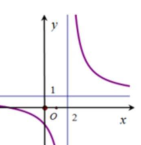
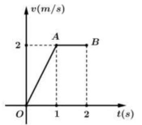
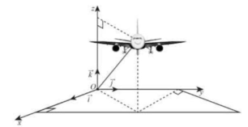
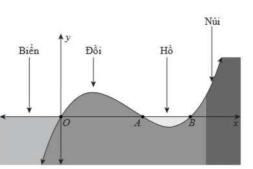
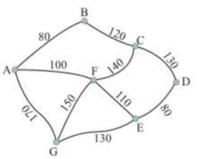
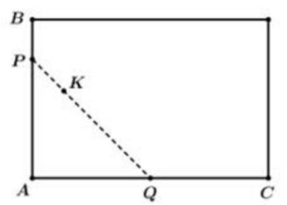

Phương trình mũ dạng \( a^{f(x)} = a^{g(x)} \) có nghiệm khi \( f(x) = g(x) \), với \( a > 0 \) và \( a \neq 1 \).
Phương trình \( 3^{2x-1} = 27 \) có nghiệm là
Chọn đáp án:
Lời giải:
Ta có: \( 3^{2x-1} = 27 \Leftrightarrow 3^{2x-1} = 3^3 \Leftrightarrow 2x - 1 = 3 \Leftrightarrow x = 2 \).
Đáp án: C.
Vector pháp tuyến của mặt phẳng \( ax + by + cz + d = 0 \) là \( \vec{n} = (a; b; c) \).
Trong không gian \( Oxyz \), vector nào dưới đây là một vector pháp tuyến của mặt phẳng \( (P): 2x + y + z - 3 = 0 \)?
Chọn đáp án:
Lời giải:
Vector pháp tuyến của mặt phẳng \( 2x + y + z - 3 = 0 \) là \( \vec{n} = (2; 1; 1) \).
Đáp án: D.
Công thức số hạng tổng quát của cấp số cộng: \( u_n = u_1 + (n-1)d \), trong đó \( d \) là công sai.
Cho cấp số cộng \( (u_n) \) có \( u_1 = 3 \) và công sai \( d = 2 \). Số hạng \( u_4 \) bằng
Chọn đáp án:
Lời giải:
Ta có: \( u_4 = u_1 + 3d = 3 + 3 \cdot 2 = 9 \).
Đáp án: B.
Nguyên hàm của \( \sin x \) là \( -\cos x + C \).
Khẳng định nào sau đây đúng?
Chọn đáp án:
Lời giải:
Ta có: \( \int \sin x \, dx = -\cos x + C \).
Đáp án: A.
Phân tích đồ thị hàm số dựa trên tính chất tiệm cận và tính đơn điệu để xác định hàm số phù hợp.
Đường cong trong hình vẽ là đồ thị của hàm số nào sau đây?

Chọn đáp án:
Lời giải:
Đồ thị trong hình vẽ là của hàm số có dạng \( y = \frac{ax + b}{cx + d} \Rightarrow \) Loại B, C. Đồ thị trong hình vẽ nghịch biến trên từng khoảng \( (-\infty; 2) \) và \( (2; +\infty) \Rightarrow \) Loại D.
Đáp án: A.
Tính chất logarit: \( \log_a (a^b) = b \), \( \log_a \left( \frac{1}{a^b} \right) = -b \).
Với \( a \) là số thực dương tùy ý khác 1, \( \log_a \left( \frac{1}{a^3} \right) \) bằng
Chọn đáp án:
Lời giải:
Ta có: \( \log_a \left( \frac{1}{a^3} \right) = \log_a a^{-3} = -3 \log_a a = -3 \).
Đáp án: D.
Đường thẳng vuông góc với mặt phẳng \( (P) \) có vector chỉ phương song song với vector pháp tuyến của \( (P) \).
Trong không gian \( Oxyz \), cho mặt phẳng \( (P): 2x - 3y - z - 4 = 0 \). Phương trình nào dưới đây là phương trình tham số của đường thẳng đi qua điểm \( I(-1; 0; 2) \) và vuông góc với \( (P) \)?
Chọn đáp án:
Lời giải:
Vector pháp tuyến của \( (P) \): \( \vec{n} = (2; -3; -1) \). Phương trình đường thẳng vuông góc với \( (P) \) qua điểm \( I(-1; 0; 2) \) có dạng: \( \left\{ \begin{array}{l} x = -1 + 2t \\ y = -3t \\ z = 2 - t \end{array} \right. \).
Đáp án: B.
Tích vô hướng: \( \vec{a} \cdot \vec{b} = |\vec{a}| |\vec{b}| \cos \theta \). Trong tứ diện đều, các cạnh bằng nhau và góc giữa các cạnh là \( 60^\circ \).
Cho tứ diện đều \( ABCD \) có cạnh bằng \( a \). Tích vô hướng \( \overrightarrow{AB} \cdot \overrightarrow{AC} \) bằng
Chọn đáp án:
Lời giải:
Vì \( ABCD \) là tứ diện đều cạnh \( a \), tam giác \( ABC \) là tam giác đều cạnh \( a \). Do đó, \( \overrightarrow{AB} \cdot \overrightarrow{AC} = |\overrightarrow{AB}| |\overrightarrow{AC}| \cos 60^\circ = a \cdot a \cdot \frac{1}{2} = \frac{1}{2} a^2 \).
Đáp án: C.
Độ lệch chuẩn của mẫu số liệu ghép nhóm được tính từ phương sai: \( S = \sqrt{S^2} \), với \( S^2 \) là phương sai.
Thành tích môn nhảy cao của các vận động viên tại một giải đấu được cho trong bảng sau:
| Mức xà (cm) | [170; 172) | [172; 174) | [174; 176) | [176; 178) |
|---|---|---|---|---|
| Số vận động viên | 3 | 10 | 6 | 1 |
Tính độ lệch chuẩn của mẫu số liệu ghép nhóm trên (làm tròn đến hàng phần trăm).
Chọn đáp án:
Lời giải:
Số trung bình: \( \bar{x} = \frac{3 \cdot 171 + 10 \cdot 173 + 6 \cdot 175 + 1 \cdot 177}{3 + 10 + 6 + 1} = 173.5 \).
Phương sai: \( S^2 = \frac{3 \cdot (171 - 173.5)^2 + 10 \cdot (173 - 173.5)^2 + 6 \cdot (175 - 173.5)^2 + 1 \cdot (177 - 173.5)^2}{20} = 2.35 \).
Độ lệch chuẩn: \( S = \sqrt{2.35} \approx 1.53 \).
Đáp án: B.
Diện tích hình phẳng giới hạn bởi hai đồ thị \( y = f(x) \) và \( y = g(x) \) được tính bằng: \( S = \int_a^b |f(x) - g(x)| \, dx \).
Tính diện tích hình phẳng \( S \) giới hạn bởi đồ thị hàm số \( y = x^2 - 6x + 7 \) và đường thẳng \( y = 3 - x \).
Chọn đáp án:
Lời giải:
Tìm giao điểm: \( x^2 - 6x + 7 = 3 - x \Leftrightarrow x^2 - 5x + 4 = 0 \Leftrightarrow x = 1 \) hoặc \( x = 4 \).
Trên \( [1; 4] \), \( y = 3 - x \geq y = x^2 - 6x + 7 \). Diện tích: \( S = \int_1^4 [(3 - x) - (x^2 - 6x + 7)] \, dx = \int_1^4 (-x^2 + 5x - 4) \, dx = \frac{9}{2} \).
Đáp án: B.
Thể tích khối chóp: \( V = \frac{1}{3} S_{\text{đáy}} \cdot h \). Với hình chóp đều, chiều cao được tính từ tâm đáy đến đỉnh.
Cho hình chóp đều \( S.ABCD \) có \( AB = a \), \( SA = a \). Thể tích khối chóp \( S.ABCD \) bằng
Chọn đáp án:
Lời giải:
Đáy \( ABCD \) là hình vuông cạnh \( a \), diện tích \( S_{\text{đáy}} = a^2 \). Chiều cao \( SH = \sqrt{SA^2 - AH^2} = \sqrt{a^2 - \left( \frac{a \sqrt{2}}{2} \right)^2} = \frac{a \sqrt{2}}{2} \).
Thể tích: \( V = \frac{1}{3} \cdot a^2 \cdot \frac{a \sqrt{2}}{2} = \frac{a^3 \sqrt{2}}{6} \).
Đáp án: C.
Hàm số đồng biến trên khoảng mà đạo hàm \( f'(x) \geq 0 \). Tìm đạo hàm và lập bảng biến thiên.
Hàm số \( y = -x^3 + 6x^2 - 2 \) đồng biến trên khoảng
Chọn đáp án:
Lời giải:
Tạp xác định: \( D = \mathbb{R} \). Đạo hàm: \( y' = -3x^2 + 12x = -3x(x - 4) \). Nghiệm: \( x = 0 \), \( x = 4 \).
Bảng biến thiên:
| \( x \) | \( -\infty \) | 0 | 4 | \( +\infty \) |
|---|---|---|---|---|
| \( y' \) | - | 0 | 0 | - |
| \( y \) | \( +\infty \) | \( \uparrow \) | \( \downarrow \) | \( -\infty \) |
Quãng đường được tính bằng tích phân của vận tốc: \( s(t) = \int_a^b v(t) \, dt \).
Một vật chuyển động với vận tốc \( v = v(t) \, (\text{m/s}) \, (0 \leq t \leq 2) \), \( t \) tính bằng giây, được cho bởi đồ thị trong hình sau:

Xét các phát biểu sau:
Chọn đáp án cho từng phát biểu:
a)
b)
c)
d)
Lời giải:
a) Sai. Vì \( v(t) = 2 \) khi \( 1 \leq t \leq 2 \).
b) Đúng. Quãng đường trong 1 giây đầu tiên là \( \int_0^1 v(t) \, dt \).
c) Sai. Quãng đường từ 1 giây đến 2 giây là \( \int_1^2 v(t) \, dt \).
d) Đúng. Quãng đường trong 2 giây: \( s(t) = \int_0^2 v(t) \, dt = \int_0^1 2t \, dt + \int_1^2 2 \, dt = 1 + 2 = 3 \).
Đáp án: a) Sai, b) Đúng, c) Sai, d) Đúng.
Phương trình chuyển động trong không gian và khoảng cách được tính bằng công thức tọa độ.
Một chiếc máy bay đang bay trên không trung (coi vận tốc gió không đáng kể). Xét hệ trục tọa độ \( Oxyz \), được gắn như hình vẽ, trong đó gốc \( O \) là vị trí của trạm kiểm soát không lưu, mặt đất trùng với mặt phẳng \( (Oxy) \) và \( M(x; y; z) \, (\text{km}) \) biểu thị vị trí máy bay trên không trung. Tại thời điểm 8h máy bay đang ở vị trí \( (50; 120; 4) \) và chuyển động với vận tốc \( \vec{v} = (300; 400; 3) \, (\text{km/h}) \).

Xét các phát biểu sau:
Chọn đáp án cho từng phát biểu:
a)
b)
c)
d)
Lời giải:
a) Đúng. Khoảng cách: \( \sqrt{50^2 + 120^2 + 4^2} \approx 130 \, \text{km} \).
b) Sai. Phương trình chuyển động: \( \left\{ \begin{array}{l} x = 50 + 300t \\ y = 120 + 400t \\ z = 4 + 3t \end{array} \right. \). Tại \( t = 1 \) (9h): \( z = 4 + 3 \cdot 1 = 7 \, \text{km} \).
c) Sai. Tại \( t = 2 \) (10h): \( (x, y, z) = (650; 920; 10) \). Khoảng cách đến \( F(1250; 1020; 0.1) \): \( \sqrt{(1250 - 650)^2 + (1020 - 920)^2 + (0.1 - 10)^2} \approx 608 \, \text{km} \).
d) Đúng. Tại \( z = 10 \), phương trình mới: \( \left\{ \begin{array}{l} x = 650 + 400t \\ y = 920 + 300t \\ z = 10 - 4t \end{array} \right. \). Hạ cánh khi \( z = 0 \): \( 10 - 4t = 0 \Rightarrow t = 2.5 \, \text{giờ} \).
Đáp án: a) Đúng, b) Sai, c) Sai, d) Đúng.
Xác suất có điều kiện: \( P(B|A) = \frac{P(A \cap B)}{P(A)} \). Tính tỷ lệ dựa trên xác suất đã cho.
Một công ty kim cương thống kê có 60% người mua kim cương là nam, có 40% số người mua kim cương là nam trên 50 tuổi và 30% số người mua kim cương là nữ trên 50 tuổi (giả sử chỉ có 2 giới tính: nam và nữ). Xét các phát biểu sau:
Chọn đáp án cho từng phát biểu:
a)
b)
c)
d)
Lời giải:
Gọi \( A \): "Người mua là nam", \( B \): "Người trên 50 tuổi". Ta có: \( P(A) = 0.6 \), \( P(A \cap B) = 0.4 \), \( P(\bar{A} \cap B) = 0.3 \).
a) Đúng. \( P(\bar{A}) = 1 - P(A) = 1 - 0.6 = 0.4 \).
b) Sai. \( P(B|A) = \frac{P(A \cap B)}{P(A)} = \frac{0.4}{0.6} = \frac{2}{3} \neq \frac{1}{3} \).
c) Đúng. \( P(B|\bar{A}) = \frac{P(\bar{A} \cap B)}{P(\bar{A})} = \frac{0.3}{0.4} = \frac{3}{4} \).
d) Sai. Tỉ lệ: \( \frac{P(B|\bar{A})}{P(B|A)} = \frac{\frac{3}{4}}{\frac{2}{3}} = \frac{9}{8} = 1.125 \neq 2 \).
Đáp án: a) Đúng, b) Sai, c) Đúng, d) Sai.
Tìm nghiệm và cực trị của hàm số bậc ba để xác định các đặc điểm của đồ thị.
Hình vẽ sau mô phỏng một mặt cắt ngang của một phần hòn đảo \( X \), trên hòn đảo \( X \) có một lớp đất cạnh một bờ biển, phần nhô lên cao là đỉnh của một quả đồi và phần chùng tạo thành một hồ nước tự nhiên.

Xét các phát biểu sau:
Chọn đáp án cho từng phát biểu:
a)
b)
c)
d)
Lời giải:
a) Sai. Phương trình \( f(x) = 0 \) có 3 nghiệm: \( x = 0 \), \( x = 2 \), \( x = 3 \).
b) Đúng. Hàm số có 3 nghiệm \( x = 0 \), \( x = 2 \), \( x = 3 \), nên có dạng \( f(x) = ax(x - 2)(x - 3) \).
c) Đúng. Đạo hàm: \( f'(x) = a \cdot (3x^2 - 10x + 6) = 0 \Rightarrow x = \frac{5 \pm \sqrt{7}}{3} \). Điểm cực đại tại \( x = \frac{5 - \sqrt{7}}{3} \), \( f\left( \frac{5 - \sqrt{7}}{3} \right) = 0.528 \Rightarrow a \approx 0.25 \).
d) Sai. Điểm cực tiểu tại \( x = \frac{5 + \sqrt{7}}{3} \), độ sâu: \( f\left( \frac{5 + \sqrt{7}}{3} \right) \approx 0.158 \, \text{km} \approx 158 \, \text{m} \).
Đáp án: a) Sai, b) Đúng, c) Đúng, d) Sai.
Thể tích khối chóp được tính dựa trên diện tích đáy và chiều cao, sử dụng các tính chất hình học không gian.
Cho hình lăng trụ tam giác \( ABC.A'B'C' \) có đáy là tam giác đều cạnh bằng 5, độ dài cạnh bên bằng 20. Biết mặt phẳng \( (BCC'B') \) vuông góc với mặt phẳng đáy và \( \angle B'BC = 30^\circ \). Thể tích của khối chóp \( A.CC'B' \) bằng bao nhiêu? (làm tròn kết quả đến hàng phần mười).
Nhập đáp án:
Lời giải:
Vì \( (BCC'B') \perp (ABC) \), \( BC \subset (ABC) \Rightarrow B'H \perp (ABC) \), với \( H \) là hình chiếu của \( B' \) trên \( BC \). Trong \( \triangle B'BH \) vuông tại \( H \): \( B'H = \sin 30^\circ \cdot BB' = \frac{1}{2} \cdot 20 = 10 \).
Thể tích khối chóp \( B'.ABC \): \( V_{B'.ABC} = \frac{1}{3} \cdot B'H \cdot S_{ABC} = \frac{1}{3} \cdot 10 \cdot \frac{1}{2} \cdot 5 \cdot 5 \cdot \sin 60^\circ \approx 36.1 \).
Vì \( C' \) là trung điểm của \( B'C \), \( d(B, (ACB')) = d(C', (ACB')) \Rightarrow V_{A.CC'B'} = V_{B'.ABC} = 36.1 \).
Đáp án: 36,1.
Sử dụng thuật toán "người láng giềng gần nhất" để tìm quãng đường ngắn nhất trong bài toán đường đi.
Các khu cắm trại tại một công viên được mô phỏng như hình vẽ bên (đơn vị: mét). Bác bảo vệ đang ở khu cắm trại tại \( A \) và phải kiểm tra tất cả các khu cắm trại \( B, C, D, E, F \) và \( G \) (không nhất thiết phải theo thứ tự). Tính quãng đường ngắn nhất bác bảo vệ có thể đi (đơn vị: mét).

Nhập đáp án:
Lời giải:
Áp dụng thuật toán người láng giềng gần nhất, bác bảo vệ ưu tiên đến khu cắm trại gần nhất chưa đi qua: \( A \to B \to C \to F \to G \to E \to D \).
Quãng đường: \( 80 + 120 + 140 + 150 + 130 + 80 = 700 \, \text{m} \).
Đáp án: 700.
Sử dụng tọa độ và tính chất hình vuông để xác định tâm và tính giá trị biểu thức.
Trong không gian với hệ tọa độ \( Oxyz \), cho hình vuông \( ABCD \) biết \( A(1; 0; 1) \), \( B(1; 0; -3) \) và điểm \( D \) có hoành độ âm. Mặt phẳng \( (ABCD) \) đi qua gốc tọa độ \( O \). Hình vuông \( ABCD \) có tâm \( I(a; b; c) \). Tính \( a^2 + 100b + 10c \).
Nhập đáp án:
Lời giải:
Mặt phẳng \( (ABCD) \) qua \( O \), \( A(1; 0; 1) \), \( B(1; 0; -3) \). Vector pháp tuyến: \( \vec{n}_{ABCD} = [\overrightarrow{OA}, \overrightarrow{OB}] = [(1; 0; 1), (1; 0; -3)] = (0; 4; 0) \). Phương trình mặt phẳng: \( y = 0 \).
Điểm \( D(x; 0; z) \), với \( \overrightarrow{AB} = (0; 0; -4) \), \( \overrightarrow{AD} = (x - 1; 0; z - 1) \). Điều kiện vuông: \( \overrightarrow{AB} \cdot \overrightarrow{AD} = 0 \Rightarrow -4(z - 1) = 0 \Rightarrow z = 1 \). Cạnh bằng nhau: \( AB = AD \Rightarrow \sqrt{(x - 1)^2} = 4 \Rightarrow x = -3 \) (vì hoành độ âm). Vậy \( D(-3; 0; 1) \).
Tâm \( I \) là trung điểm \( BD \): \( I(-1; 0; -1) \Rightarrow a = -1, b = 0, c = -1 \). Giá trị: \( a^2 + 100b + 10c = (-1)^2 + 100 \cdot 0 + 10 \cdot (-1) = -9 \).
Đáp án: -9.
Quãng đường được tính bằng tích phân của vận tốc theo thời gian qua các giai đoạn chuyển động.
Một người lái tàu nhanh đang thử nghiệm một chiếc tàu mới. Từ trạng thái nghỉ, ông bắt đầu thử nghiệm bằng cách tăng tốc độ của tàu một cách đều đặn cho đến khi đạt \( 5 \, \text{km/h} \) trong vòng 1 phút. Vì đang ở khu vực không được tạo sóng, ông giữ tốc độ này trong 5 phút. Sau khi rời khỏi khu vực trong 5 phút, ông tăng tốc độ của tàu đều đặn lên \( 80 \, \text{km/h} \) trong vòng 1 phút. Sau khi giữ tốc độ này trong 5 phút, ông giảm tốc độ của tàu một cách đều đặn trong vòng 4 phút cho đến khi dừng hẳn. Tính quãng đường mà ông ta đã thử nghiệm chiếc tàu (đơn vị kilomet, làm tròn đến hàng phần mười).
Nhập đáp án:
Lời giải:
1) Trong \( \frac{1}{60} \, \text{giờ} \): \( v(t) = 300t \), quãng đường: \( \int_0^{\frac{1}{60}} 300t \, dt = \frac{1}{24} \, \text{km} \).
2) Trong \( \frac{5}{60} \, \text{giờ} \): \( v(t) = 5 \), quãng đường: \( 5 \cdot \frac{5}{60} = \frac{5}{12} \, \text{km} \).
3) Trong \( \frac{2}{60} \, \text{giờ} \): \( v(t) = 1200t - 115 \), quãng đường: \( \int_{\frac{6}{60}}^{\frac{8}{60}} (1200t - 115) \, dt = \frac{5}{6} \, \text{km} \).
4) Trong \( \frac{5}{60} \, \text{giờ} \): \( v(t) = 45 \), quãng đường: \( 45 \cdot \frac{5}{60} = 3.75 \, \text{km} \).
5) Trong \( \frac{1}{60} \, \text{giờ} \): \( v(t) = 2100t - 410 \), quãng đường: \( \int_{\frac{13}{60}}^{\frac{14}{60}} (2100t - 410) \, dt = \frac{25}{24} \, \text{km} \).
6) Trong \( \frac{5}{60} \, \text{giờ} \): \( v(t) = 80 \), quãng đường: \( 80 \cdot \frac{5}{60} = \frac{20}{3} \, \text{km} \).
7) Trong \( \frac{4}{60} \, \text{giờ} \): \( v(t) = -1200t + 460 \), quãng đường: \( \int_{\frac{19}{60}}^{\frac{23}{60}} (-1200t + 460) \, dt = \frac{8}{3} \, \text{km} \).
Tổng quãng đường: \( \frac{1}{24} + \frac{5}{12} + \frac{5}{6} + 3.75 + \frac{25}{24} + \frac{20}{3} + \frac{8}{3} \approx 15.4 \, \text{km} \).
Đáp án: 15,4.
Tìm giá trị nhỏ nhất của độ dài đoạn thẳng cắt hai trục tọa độ bằng cách tối ưu hóa hàm số.
Một cái hồ rộng có hình chữ nhật. Tại một góc nhỏ của hồ người ta đóng một cái cọc ở vị trí \( K \) cách bờ \( AB \) là \( 1 \, \text{m} \) và cách bờ \( AC \) là \( 8 \, \text{m} \), rồi dùng một cây sào ngăn một góc nhỏ của hồ chắn hồ (tham khảo hình vẽ bên). Tính chiều dài ngắn nhất của cây sào để cây sào có thể chạm vào 2 bờ \( AB, AC \) (làm tròn đến hàng phần mười).

Nhập đáp án:
Lời giải:
Đặt \( A \) tại gốc \( (0; 0) \), \( AC \) trên trục \( Ox \), \( AB \) trên trục \( Oy \). Đường thẳng qua \( K(1; 8) \) cắt \( Ox \) tại \( Q(a; 0) \), \( Oy \) tại \( P(0; b) \), có dạng \( y = ax + b \Rightarrow a + b = 8 \).
Độ dài \( PQ = \sqrt{a^2 + b^2} = \sqrt{a^2 + (8 - a)^2} = \sqrt{2a^2 - 16a + 64} = \sqrt{2(a - 4)^2 + 32} \geq \sqrt{32} \approx 5.7 \).
Chiều dài ngắn nhất: \( 5.7 \, \text{m} \).
Đáp án: 5,7.
Sử dụng xác suất bù để tính số lần thử tối thiểu đảm bảo xác suất đạt yêu cầu.
Tại một địa phương trong dân số, tỷ lệ bệnh sốt rét là 20%, tỷ lệ lách to là 30%. Trong số người bị sốt rét thì tỷ lệ lách to chiếm 80%. Cần khám ít nhất bao nhiêu người để có ít nhất một người có lách to và không sốt rét với xác suất ít nhất là 90%?
Nhập đáp án:
Lời giải:
Gọi \( A \): "Bị sốt rét", \( B \): "Lách to". Ta có: \( P(A) = 0.2 \), \( P(B) = 0.3 \), \( P(B|A) = 0.8 \).
\( P(A \cap B) = P(B|A) \cdot P(A) = 0.8 \cdot 0.2 = 0.16 \). \( P(\bar{A} \cap B) = P(B) - P(A \cap B) = 0.3 - 0.16 = 0.14 \).
Xác suất không có ai lách to và không sốt rét: \( P(\bar{X}) = (1 - 0.14)^n = 0.86^n \). Yêu cầu: \( P(X) = 1 - 0.86^n \geq 0.9 \Rightarrow 0.86^n \leq 0.1 \Rightarrow n \geq \log_{0.86} 0.1 \approx 15.27 \).
Vậy cần ít nhất 16 người.
Đáp án: 16.